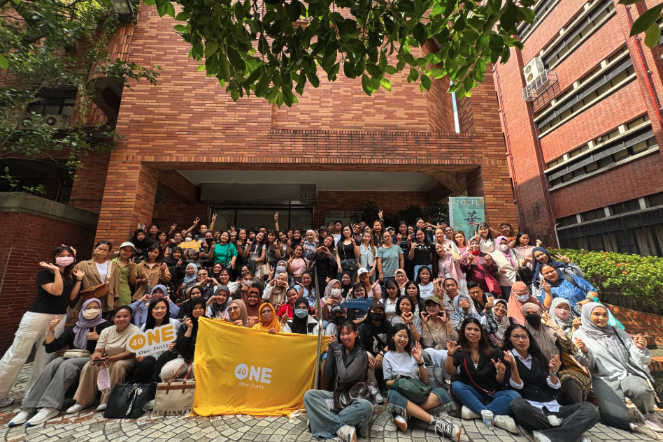

Nobyembre 15, 2026 (Linggo)
NTD$1,400NTD$1,260
Limitado ang slots! Full refund kapag pumasa
Agosto 10–31

Group photo ng mga naunang examinees
Ang TOCFL ay opisyal na pagsusulit sa kakayahan sa wikang Mandarin sa Taiwan. Ang eksaming ito ay TOCFL Speaking Test - Band A. Makakatulong ang resulta sa pag-apply mo bilang “Intermediate Skilled Worker” (中階技術人力). Lahat ng examinees ay sasagot sa harap ng computer gamit ang recording, hindi ito face-to-face interview, kaya huwag mag-alala.
Mga Highlight ng Pagpaparehistro
Pumasa sa exam,
full refund ang registration fee
Preparatory class at AI speaking tool,
tutulong sa pagsasanay mo
Kasama mo ang One-Forty
hanggang araw ng exam
Face-to-face payment,
libreng propesyonal na larawan
Sino ang pwedeng makakuha ng scholarship?
Kung ikaw ay kasalukuyan o dating estudyante ng One-Forty
Kapag pumasa ka sa exam at nagpadala ng litrato + reflection, ire-refund ang buong registration fee mo. Limitado ang scholarship slots! Unang makapasa sa verification, unang makakakuha. Kapag puno na, ilalagay sa waitlist.
Kung hindi ka estudyante ng One-Forty
Pwede ka pa ring magparehistro at kumuha ng exam, pero ang scholarship this time ay para lang sa mga estudyante ng One-Forty. Kapag pumasa ka, hindi ka pa rin makakakuha ng scholarship.
Ano ang Sinasabi ng mga Estudyante
Matapos kumuha ng TOCFL exam, mas naintindihan ko ang kakayahan ko sa Mandarin. Ang pinakamahalaga, buong tapang kong ginawa ang unang hakbang para subukan.
Endah ・Matapang sumubok, lumampas sa sariling limitasyon
Sa pamamagitan ng TOCFL exam, malinaw kong nalaman kung nasaan ang kasalukuyang antas ko sa Mandarin. Ang prosesong ito ng pagharap sa hamon ay nagpapalaki sa akin ng pride!
Widaryati ・Isang karanasang ikinararangal
3 hakbang sa pagpaparehistro
- Punan ang registration form
- Pumili ng paraan ng pagbabayad (online / face-to-face)
- Kumpletuhin ang bayad ✓ Dito lang matatawag na successful ang pagpaparehistro mo!
2 paraan ng pagbabayad, pumili ng isa
Online payment
Pagkatapos ma-verify, makakatanggap ka muna ng confirmation email, tapos magpapadala ang system ng ibon barcode slip. Dalhin ito sa kahit anong 7-11 sa buong Taiwan para magbayad.
⚠️ Kung online payment ang piniling paraan, KAILANGAN mag-upload ng sarili mong 2x2 photo! Kung hindi nag-upload, o hindi tugma ang larawan sa requirements, hindi namin maituloy ang pag-proseso ng registration mo.
Face-to-face payment
September 13 (Linggo) 11:00–13:00 sa Taipei, magbayad diretso doon, may libreng propesyonal na larawan para sa iyo, isang beses lang lahat tapos na. Ito lang ang tanging face-to-face session, huwag palampasin.
⚠️ Babala sa Scam: Dalawang paraan lang tinatanggap ng One-Forty na bayaran
- 📧 Ibon barcode slip na ipinadala sa email
- 🧑💼 Face-to-face payment sa Setyembre 13
Bukod sa dalawang ito, kung may private message na humihingi ng bank transfer, o gustong magbayad ka sa ibang app, HINDI iyon opisyal. Huwag magbayad, kumpirmahin muna sa amin.
Kumpletong Timeline
👉 I-swipe pakaliwa para makita ang buong proseso
Preparatory class
Mga madalas itanong
Hindi ako estudyante ng One-Forty, pwede pa rin akong magparehistro? Pwede ba akong makakuha ng scholarship?
Pwede kang magparehistro! Bukas ang exam na ito para sa lahat ng kaibigang migrant workers sa buong Taiwan. Pero ang scholarship ay para lang sa kasalukuyan o dating estudyante ng One-Forty.
Ano ang kailangang punan sa registration? Ano ang dapat pagtuunan ng pansin?
Ang pangalan at petsa ng kapanganakan mo ay dapat KAPAREHONG-KAPAREHO ng nasa passport/ARC mo! Kapag mali ang isinulat, hindi ka makakakuha ng exam.
Kailangan ba akong makipag-usap nang harapan sa examiner sa speaking test?
Hindi, tulad din ng listening test, lahat ng examinees ay sasagot sa harap ng computer gamit ang recording. Hindi ito interview, kaya huwag mag-alala.
Pagkatapos pumasa sa exam, paano ko makukuha ang scholarship?
Punan ang scholarship application form (kasama ang litrato at reflection tungkol sa exam). Pagkatapos ma-confirm ang qualification, ilalabas ang pera sa Enero ng susunod na taon.